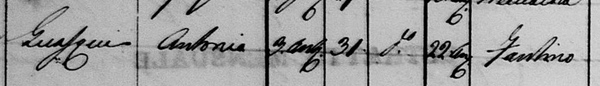

|
(Folaghino) 4/7 A Siena il suo cognome venne spesso erroneamente trascritto GUASCHI (cfr.) Nato a Fucecchio (FI) il 20 gennaio 1829 (vedi fede di nascita) Morto a Fucecchio alle ore 3 della mattina del 31 ottobre 1851. Era già sposato. 

- Ha la peculiarità di aver vinto gli ultimi 3 Palii della sua carriera, primato condiviso con Biggèri (Tommaso Felloni) ed entrambi morirono prima di poter prendere parte al successivo palio.  Defunti di S.Giovanni Battista di Fucecchio
La sua fama non sarà pari a quella dei leggendari Gobbo Saragiolo, Caino o Bachicche ma, con 4 vittorie su 7 Palii disputati, Antonio Guasqui detto Folaghino un posto nella storia del Palio se lo è guadagnato di diritto. Folaghino esordì poco più che diciottenne, il 16 agosto 1847 per il Nicchio in una carriera corsa in un clima di grandissima tensione a seguito dei moti per l’indipendenza nazionale, con la Piazza presidiata da un gran numero di forze dell’ordine. Il giovane fantino non si fece intimorire dalla situazione così pesante e riuscì a vincere al termine di un lungo duello a suon di nerbate con il grande Gobbo Saragiolo che, con i colori della Torre, già pregustava l’ennesima vittoria. Le tre successive carriere (luglio, agosto ed ottobre 1848 ) furono avare di soddisfazioni per il fantino fucecchiese che però, al suo ritorno sul tufo, nel 1850, conquistò uno storico cappotto per i colori dalla Chiocciola. Se a luglio usufruì di una buona dose di fortuna, approfittando della simultanea caduta di Saltatore e di Figlio di Bonino che si contendevano il successo, ad agosto, riuscì ad avere la meglio nel finale di un giovanissimo Bachicche (appena tredicenne) che correva nell’Onda, contrada per la quale, il 17 agosto 1851, Folaghino conquistò il quarto successo personale ribattendo colpo su colpo agli attacchi di un altro mito di Piazza, Paolaccino, che difendeva i colori della Torre. Proprio nel momento di maggior splendore la stella di Folaghino si spense brutalmente, in quanto, nella notte tra il 30 ed il 31 ottobre del 1851, egli morì improvvisamente nella sua abitazione a Fucecchio. Il Palio perse così un grande protagonista che avrebbe potuto decisamente cogliere molti altri trionfi se la vita non gli avesse richiesto anzitempo il conto.
Davide Donnini
|